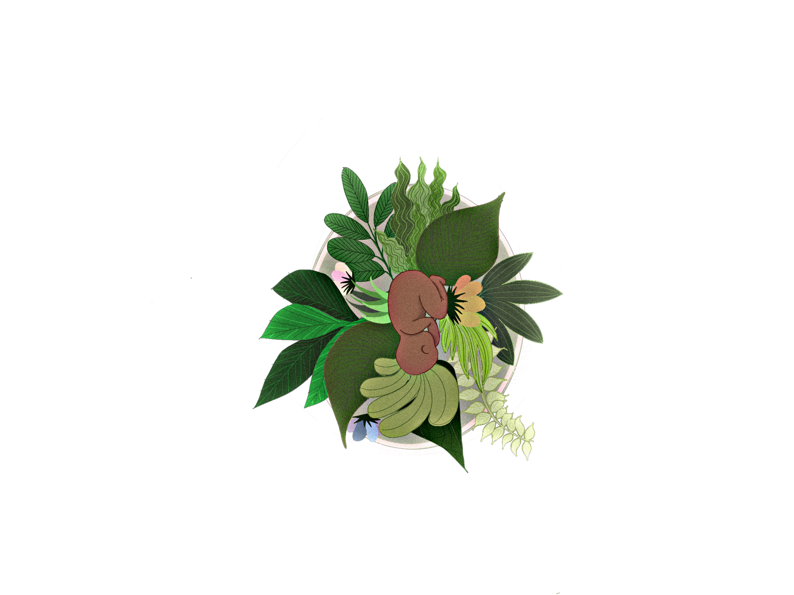
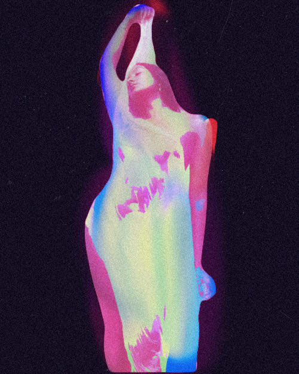
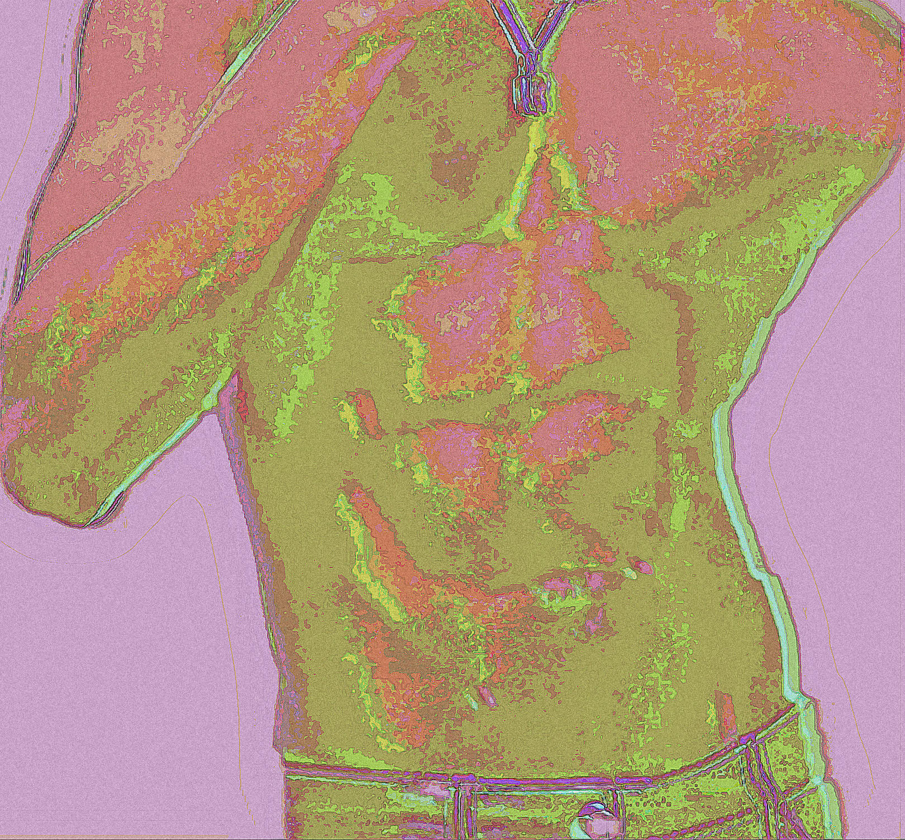
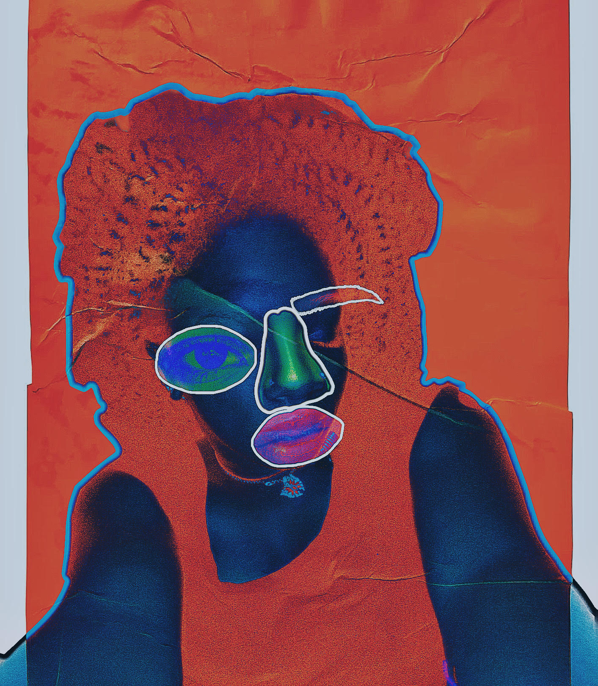
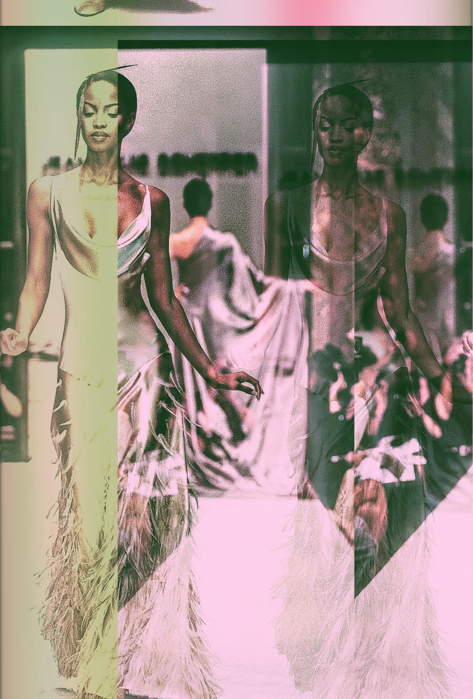
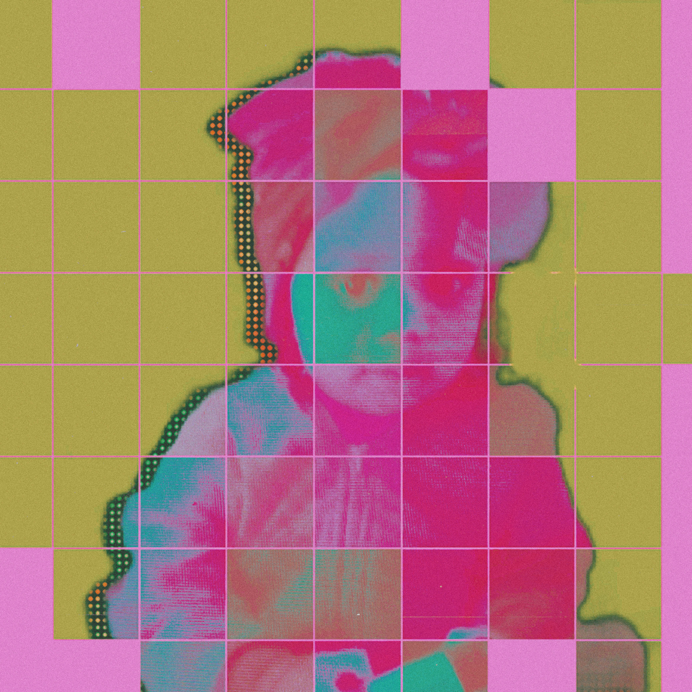
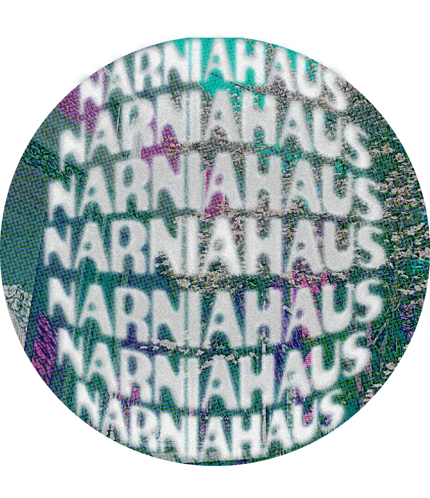
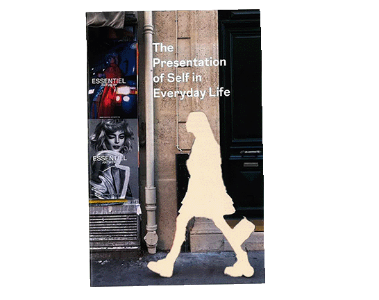
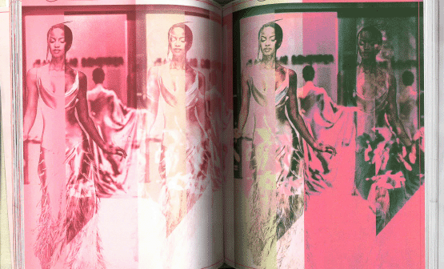
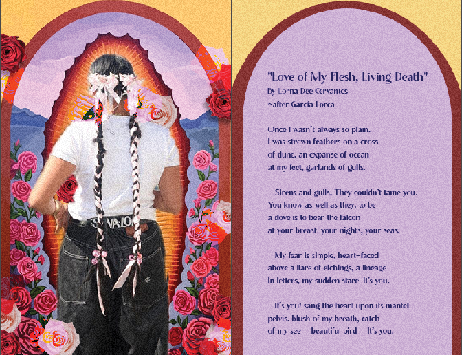

Selected Work
Hover over a project to view details.

Doula Shanti Logo

Aura Study Poster

Pink Lemonade

Bits and Pieces

Motion study

Untitled

Narnia Haus Logo

but, i need it

but, i need it pt.2

The Presentation of Self In Everyday Life

I'm just a Girl

Love of my Flesh, Living Death